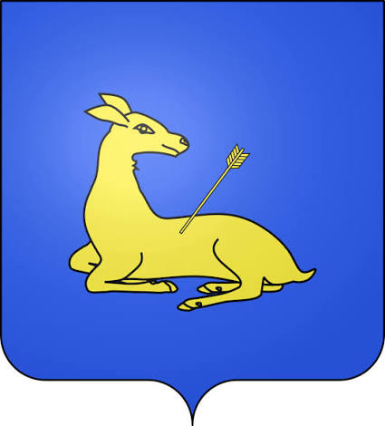

Saint-GillesL'abbatiale des chemins de Compostelle


⟹ Abbatiale romane · Pèlerinage · Rhône ⟸

Le territoire de Saint-Gilles appartient à cette Camargue gardoise, delta et marges deltaïques du Rhône et du Vidourle, terre amphibie façonnée depuis des siècles par la lutte contre l'eau salée, les crues et l'ensablement, où l'homme a dû apprendre à composer avec un environnement aussi fertile qu'instable.
La légende de l'ermite Gilles et de sa biche. Selon la tradition hagiographique, Gilles (Aegidius), ermite d'origine grecque, se serait installé au VIe ou VIIe siècle dans une forêt marécageuse au sud de Nîmes pour y vivre retiré du monde, aux côtés d'une biche apprivoisée qui le nourrissait de son lait. Lors d'une partie de chasse, un roi wisigoth — que la légende nomme Wamba — aurait décoché une flèche visant l'animal, blessant l'ermite à la main qui cherchait à le protéger. En signe de repentir, le souverain lui aurait fait don des terres environnantes pour y fonder une abbaye, dont Gilles devint le premier abbé ; après sa mort, un culte se développe rapidement autour de son tombeau, donnant son nom au monastère puis à la ville qui s'est développée alentour.
Une abbaye majeure sur les chemins de Compostelle. Le monastère, bâti dès le VIIe siècle et d'abord dédié à saint Pierre et saint Paul, prend le nom de saint Gilles au IXe siècle et se place sous la protection directe du Saint-Siège, échappant ainsi à l'autorité de l'évêché voisin. À partir du Xe siècle, la renommée de ses reliques en fait la prospérité : Saint-Gilles devient au Moyen Âge la quatrième destination de pèlerinage de la chrétienté occidentale, après Jérusalem, Rome et Saint-Jacques-de-Compostelle, point de convergence entre le chemin de Régordane reliant le Puy-en-Velay et la via Tolosana vers l'Espagne — si bien qu'on la surnomme alors la « via Aegidiana », la route de Saint-Gilles. La ville sert également de port d'embarquement sur le Rhône pour les pèlerins et les croisés en partance vers Rome et la Terre sainte ; c'est de la puissante famille des comtes de Toulouse, dite « de Saint-Gilles », qu'est issu Raymond IV, l'un des principaux chefs de la première croisade en 1096.
L'assassinat qui déclenche la croisade des Albigeois. C'est à Saint-Gilles que se noue, en janvier 1208, l'un des épisodes les plus dramatiques de l'histoire médiévale du Languedoc : reçu en son château par le comte Raymond VI de Toulouse, excommunié pour son inaction contre l'hérésie cathare, le légat du pape Pierre de Castelnau assiste à un entretien qui tourne à la confrontation. Le lendemain matin, 14 janvier 1208, alors qu'il s'apprête à franchir le Petit Rhône pour regagner Rome, le légat est assassiné par un écuyer proche du comte. Ce meurtre, qui suscite une intense émotion dans toute la chrétienté, pousse le pape Innocent III à proclamer la croisade contre les Albigeois : Raymond VI, tenu pour responsable, devra en juin 1209 effectuer à Saint-Gilles même, sur le lieu du crime, une pénitence publique, torse nu et flagellé devant l'abbatiale, avant de prêter un serment de fidélité à l'Église.
Dès le Moyen Âge, moines et seigneurs locaux entreprennent d'aménager ces terres inhospitalières : digues, canaux de drainage et premiers salins organisent progressivement un territoire où l'agriculture, l'élevage extensif des taureaux et des chevaux, et l'exploitation du sel deviennent les piliers d'une économie originale, distincte de celle du reste du Languedoc.

Une façade romane exceptionnelle. La façade sculptée de l'abbatiale, achevée dans le dernier quart du XIIe siècle et classée monument historique dès 1840, constitue l'un des chefs-d'œuvre majeurs de la sculpture romane provençale ; elle sert même de modèle, en 1902-1903, à l'architecte américain Stanford White pour orner l'église Saint-Barthélemy de Manhattan, à New York. L'édifice, organisé autour d'une vaste crypte semi-enterrée abritant le tombeau du saint et surmontée d'une église haute jadis longue de cent mètres, est également célèbre pour sa vis de Saint-Gilles, escalier à noyau hélicoïdal d'une prouesse technique mondialement reconnue par les tailleurs de pierre. Cet ensemble monastique vaut à Saint-Gilles d'être inscrit en 1998 sur la liste du patrimoine mondial de l'UNESCO, au titre des chemins de Saint-Jacques-de-Compostelle en France.
Les guerres de Religion et le déclin du pèlerinage. L'abbatiale subit de graves destructions pendant les guerres de Religion au XVIe siècle, notamment l'effondrement de son chœur, avant d'être partiellement reconstruite. Le tombeau de saint Gilles, disparu durant ces troubles, n'est redécouvert qu'en 1865, et le pèlerinage historique ne reprendra véritablement qu'en 1965. Le déclin du grand pèlerinage médiéval et l'ensablement progressif du Rhône réduisent ensuite l'importance de la ville, qui se recentre sur l'agriculture et la viticulture locale.
La Camargue gardoise, terre de grands domaines agricoles et d'élevage extensif, développe à partir du XIXe siècle une identité taurine affirmée, influencée par les traditions ibériques mais adaptée aux usages locaux : la course camarguaise, qui oppose sans mise à mort un raseteur à un taureau, devient un sport traditionnel codifié, pratiqué dans les arènes de nombreux villages de la région et toujours vivace aujourd'hui.
L'aménagement touristique du littoral languedocien dans les années 1960-1970, dans le cadre de la mission Racine, transforme profondément l'économie de plusieurs communes de Camargue gardoise, désormais partagées entre l'agriculture traditionnelle, l'élevage extensif et un tourisme balnéaire et vert en plein essor, sans que ce développement n'efface l'identité rurale et taurine profonde du territoire.

Aujourd'hui, Saint-Gilles conserve une identité marquée par ce passé : ancien port fluvial et haut lieu de pèlerinage, la commune s'inscrit pleinement dans la zone Camargue gardoise, entre mémoire patrimoniale et vie locale contemporaine. Cette continuité, entre héritage et vie quotidienne, fait aujourd'hui tout l'intérêt d'une visite attentive à l'histoire du lieu.
Saint-Gilles a été, au Moyen Âge, l'une des portes majeures de la chrétienté vers Compostelle et la Terre sainte, avant que son abbatiale sculptée ne devienne, seule, le témoin de cette grandeur passée.
Synthèse historique — L'Âme des Régions